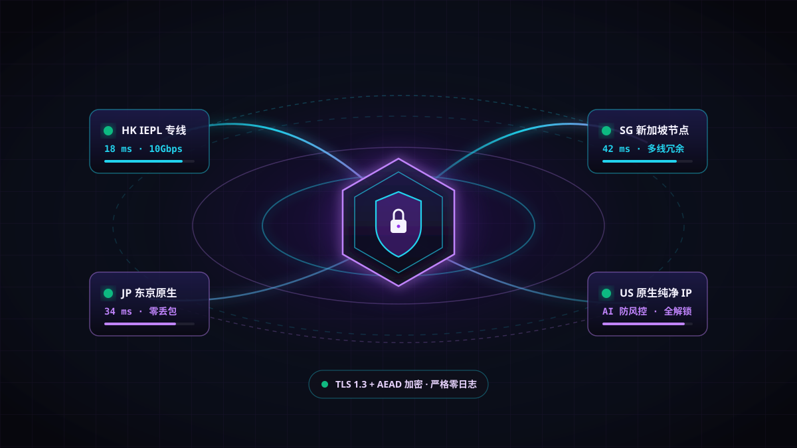
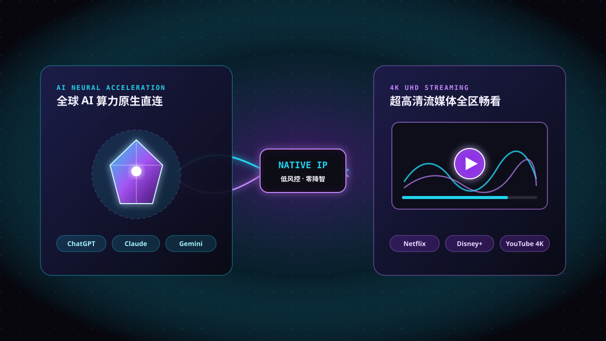

Mini 迷你版
适合轻量查询、移动端出行与日常 AI 问答
¥34 起 / 月（月付约 ¥34–¥40）
Mini Family 家庭版（5 IP）约 ¥38.3–¥48 / 月
- 每月 50 GB 高速专线流量
- IEPL / BGP 优质跨境专线
- 支持 ChatGPT、Gemini 与流媒体解锁
- 个人版支持 2 个在线 IP 设备
- 支持非高峰闲时低倍率优惠
参考官方主流个人版（2 在线 IP）与 Family 家庭版（5 在线 IP）公开定价，支持月付灵活体验与年付阶梯优惠。
适合轻量查询、移动端出行与日常 AI 问答
Mini Family 家庭版（5 IP）约 ¥38.3–¥48 / 月
适合日常办公、学习开发与定期观影
Base Family 家庭版（5 IP）约 ¥52.7–¥62 / 月
适合高频 AI 编程、4K 追剧与跨境办公主力
Pro Family 家庭版（5 IP）约 ¥89–¥105 / 月
适合重度创作者、团队协同与海量传输需求
Max Family 家庭版（5 IP）约 ¥153–¥180 / 月
| 核心规格与价格对比 | Mini 迷你版 | Base 标准版 | Pro 进阶版（推荐） | Max 旗舰版 |
|---|---|---|---|---|
| 每月高速流量配额 | 50 GB / 月 | 200 GB / 月 | 500 GB / 月 | 1000 GB (1TB) / 月 |
| 个人版参考价（2 在线 IP） | 约 ¥34 – ¥40 / 月 | 约 ¥43.5 – ¥52 / 月 | 约 ¥74 – ¥88 / 月 | 约 ¥127 – ¥150 / 月 |
| Family 家庭版（5 在线 IP） | 约 ¥38.3 – ¥48 / 月 | 约 ¥52.7 – ¥62 / 月 | 约 ¥89 – ¥105 / 月 | 约 ¥153 – ¥180 / 月 |
| 专线架构与闲时政策 | IEPL / BGP 专线 · 闲时低倍率 | IEPL / BGP 专线 · 闲时低倍率 | IEPL / BGP 高优专线 · 闲时低倍率 | 全节点旗舰专线 · 闲时低倍率 |
| AI 与 4K 流媒体解锁 | ChatGPT / YouTube 高清 | 全平台 AI / Netflix / Disney+ | 全平台 AI + 全区 4K 秒开 | 高纯净原生出口 + 4K/8K 畅享 |
| 官方实时下单入口 | 前往购买 | 前往购买 | 立即购买 | 前往购买 |
温馨提示：以上价格区间综合自公开评测站月付及年付折算参考价，具体实时优惠折扣、汇率浮动与套餐库存请以 Kuromis 库洛米官方商店 实时结算页为准。如需选型指导，可查看 推荐咨询。
抛弃卡顿与频繁掉线的廉价线路，以企业级底层传输架构为个人与团队提供稳定可靠的加速体验。

采用物理层点对点跨境专线直连，彻底绕开公网拥堵出口，晚高峰时段依然保持满速稳定、超低抖动。
全链路采用现代高强度加密隧道技术，有效抵御公共 Wi-Fi 窃听与流量嗅探；承诺绝不记录任何用户浏览日志。
一份订阅即可通用 Windows、macOS、iOS、Android、Linux 及软路由设备，支持主流客户端一键订阅导入。
覆盖香港、台湾、日本、新加坡、美国、韩国及欧洲主要节点，智能健康监测配合多线 BGP 自动切换不断连。
内置精细化路由分流规则，访问国内网银、微信、淘宝等本地服务直接走本地宽带，海外工作娱乐自动走专线。
注册后即可查看图文客户端配置教程，3 分钟内完成部署；遇任何连接疑问，随时通过工单获得专业技术人员协助。
针对高频风控的 AI 平台与严苛版权校验的海外流媒体专门部署纯净原生出口 IP，打开即用。

精选低风控纯净 IP 出口，减少频繁弹窗验证与降智问题，保障编程开发、图像生成与日常办公流畅不中断。
大带宽多媒体优化路由，支持港台、日韩、欧美全区独家剧集与热播新番解锁，进度条随意拖拽零缓冲。
稳定与速度是最好的名片，听听长期使用 Kuromis 库洛米的开发者、创作者和影音爱好者怎么说。
“之前用其他机场写代码老是遇到 Claude 账号风控或者 Cursor 断流，换到库洛米的 Pro 进阶版后美日原生节点稳得一批，每月 500GB 完全用不完。”
“晚上八九点用家里的 Apple TV 看 Netflix 和 YouTube 4K，香港和台湾专线节点拖动进度条一秒缓冲完，办的 Family 家庭版支持 5 个 IP 全家共享超省心。”
“平时既要登海外跨境店铺后台，又要用国内软件联系客户，选的 Base 年付折下来一个月才四十出头，智能分流完全不需要手动来回开关。”
“先买了个 Mini 版日常出门查资料和用 ChatGPT，配置教程很清晰，遇到 iOS 小问题提交工单不到十分钟就搞定了，专线延迟确实稳。”
购买与配置前如有疑问，可先浏览下方高频问题；更多帮助可在官网用户中心获取。